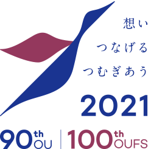

<footer>
	<div class="container">
		<div class="row">
			<div class="col-md-10 footer" style="text-align: center;">
				<span class="copyright">
					Since 2018 &copy; SENS Laboratory | Graduate School of Engineering Science, Osaka University.
					[redesign by
					<a href="http://punpongsanon.info/" target="_new" class="footer-text-link">
						moji</a> and
					<a href="https://github.com/narugit" target="_new" class="footer-text-link">
						naruki</a>].
					All Rights Reserved.
				</span>
			</div>
			<div class="col-md-1 footer" style="text-align: right;">
				<a href="http://www.osaka-u.ac.jp/anniversary2021" target="_new">
				
				</a>
			</div>
			<div class="col-md-1 footer" style="text-align: left;">
				<a href="http://www.osaka-u.ac.jp/" target="_new">
				
				</a>
			</div>
		</div>
	</div>
</footer>
